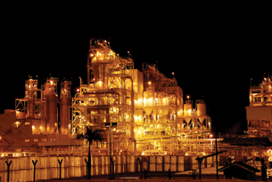

© jamalludin/shutterstock
In many centres in Alberta, there are areas often called “Refinery Row.” Along these roadways are many large, industrial complexes like the one pictured. In Module 5 you learned that refineries are used to process mixtures of hydrocarbons. As you will learn in this module, many of the facilities that people call refineries are not that at all—rather, they are petrochemical facilities, and they are at the core of Alberta’s petrochemical industry.
In the petrochemical industry, hydrocarbons are converted into other chemicals using a variety of chemical reaction processes. Some of these reaction types change hydrocarbons into related molecules that contain oxygen and other atoms. The resulting compounds have unique physical and chemical properties that make them useful materials for everyday products.
In Module 6 you will investigate the following questions:
What kinds of chemical reactions are used to manipulate hydrocarbons in order to produce petrochemicals?
How has the chemical industry responded to concerns about the environment?
What are some of the processes that occur within Alberta’s petrochemical industry?